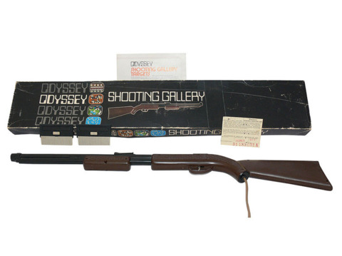

History
The Dawn of an Era
Magnavox Odyssey has been the first home video game console ever to appear on the market.
An year after the release of Bucket Filling Game in 1967, Ralph Baer
started working on Odyssey in 1968, but it's been on the market only between 1972
and 1975 (also due to the small success).
Now known as the "Brown Box",
it's preserved in the National Museum of American History in Washington.

The Spread of an idea
The idea of the game was early noticed and since the arrival on the market of Pong,
Magnavox had to sue lots of important companies, such Atari(the Pong creator),
Coleco, Mattel, Seeburg, and Activision, always resulting as the winner.
Nintendo then tried to sue them saying they were copying Tennis for Two but still couldn't win
against Magnavox and their terrible lawyers. Nice try Nintendo!
The company then produced other similar models of Odyssey mantaining the same structure
(The Odyssey series).
Games & Console
Console
Gameplay
The console was based on the usage of two main controllers that commanded two of the three displayed squares, thanks to which it was possible to play different games. In fact it was possible to use different special cards to play (one per time, of course) and 6 of them were already with the console while the remaining 6 had to be bougth apart from the packet. After the users had decided which game to play he would have been supposed to add in front of the monitor the corrispondent skin in order to add the components needed to play (such as the bar for tennis).In fact the cNOME COGNOMEontrollers had two heigths on both sides relatively controlling (from the left-side) the horrizontal and vertical movement of the square. The console used to be sold together with some papers in order to count the points.
Curiosities
Market trend
The product didn't succeed for multiple reasons: there was a corridor entry which brougth people to think it could
only work on Magnavox TVs, or only on color ones and not on the black-and-white ones.
That wasn't obviously true, but together with its high cost (100 $ for the console + 25 $ for the pistol),
it brougth the console to the failure selling "only" 330 000 units.
In 1975 the company stopped producing it to move on the new
Odyssey 100
Possible Games
For this model 27 games have been producted between 1972 and 1973 to improve the client pleasure.| Game | Card N. | Genre |
|---|---|---|
| Analogic | 3 | Various |
| Baseball | 3 | Sport |
| Basketball | 8 | Sport |
| Brain Wave | 3 | Various |
| Cat and Mouse | 4 | Various |
| Dogfight | 9 | Light gun |
| Football | 3 or 4 | Sport |
| Fun Zoo | 2 | Various |
| Handball | 4 | Action |
| Haunted House | 4 | Action |
| Hockey | 3 | Sport |
| Interplanetary Voyage | 12 | Action |
| Invasion | 4, 5 or 6 | Various |
| Percepts | 2 | Various |
| Prehistoric Safari | 9 | Light gun |
| Roulette | 6 | Casinò |
| Shooting Gallery | 10 | Light gun |
| Shootout | 9 | Light gun |
| Simon Says | 2 | Various |
| Ski | 2 | Sport |
| Soccer | 3 or 5 | Sport |
| States | 6 | Education |
| Submarine | 5 | Shooter |
| Table Tennis | 1 | Sport |
| Tennis | 3 | Sport |
| Volleyball | 7 | Sport |
| Win | 4 | Various |
| Wipeout | 5 | Various |
Shooting Gallery
Another particular idea Bear had was the Shooting Gallery, which wasan optic pistol sold apart from the console. It looks like a shotgun and its purpose is to kill in the game thanks to a photocell individuating ligths on the screen and not. In fact this was easly distractable even with a simple ligth bulb... Also due to its additional cost of 25$ it experienced very bad.